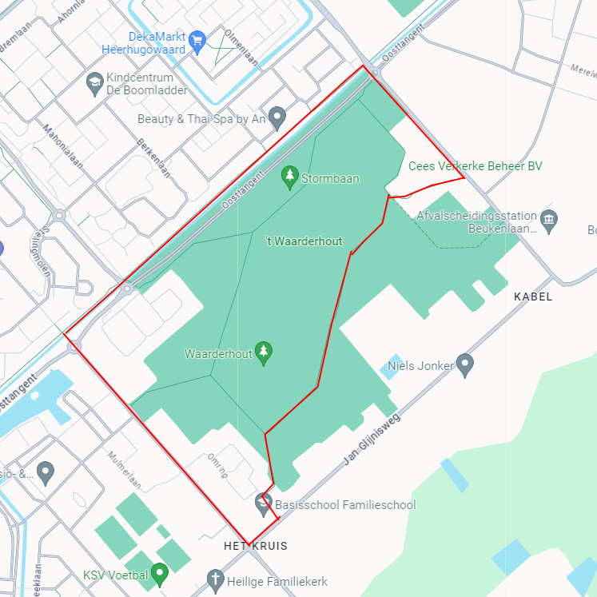
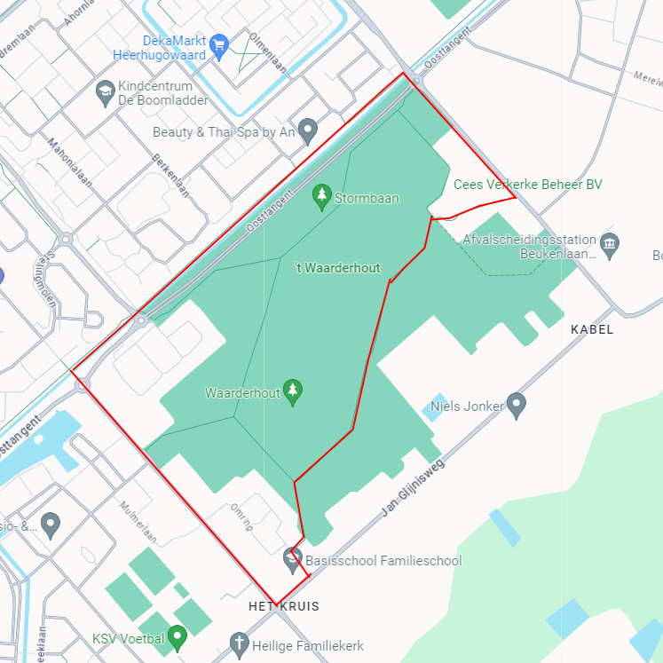

Contact
Contact
Route Waarderhout
 

Afstand: 3.5km
Beginner
25 minuten
Beschrijving
Waarderhout is een bekend bosgebied in het oosten van Heerhugowaard. De route Waarderhout is een populaire hardlooproute onder de beginnende hardlopers. De route is 3.5km lang en daarom erg aantrekkelijk voor de beginners. Het is niet aangeraden om deze route te lopen in het donker, het is er namelijk niet goed genoeg belicht om in het donker te hardlopen.
Klik hier om de route te openen naar het begin van deze hardlooproute Klik hier om de hardlooproute te openen in Google Maps